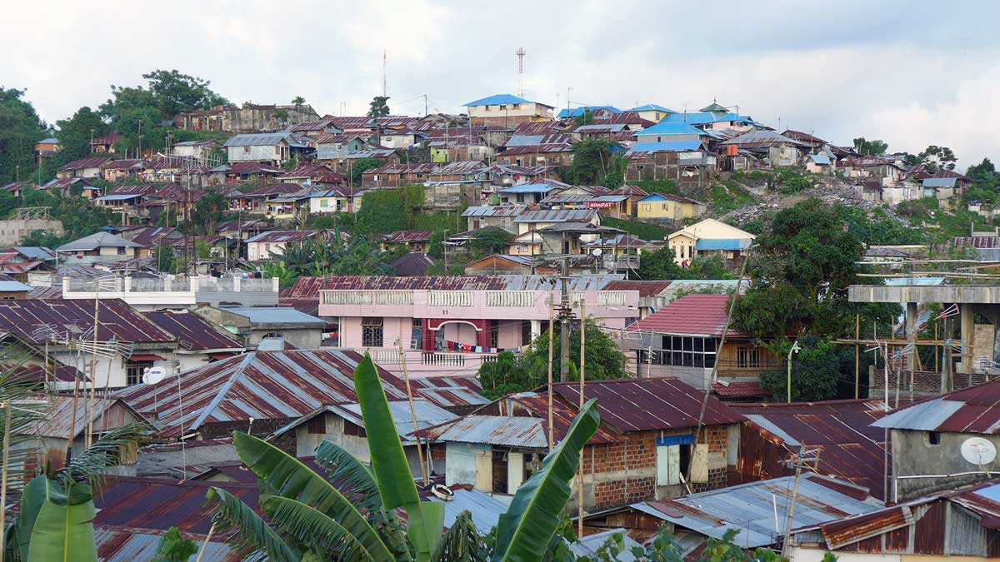
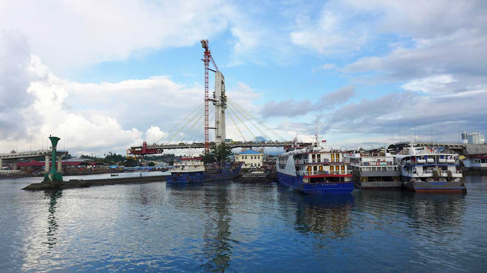

Manado Climate Change Vulnerability Assessment
Manado, North Sulawesi, Indonesia
Manado is the coastal capital of North Sulawesi province, surrounded by mountains to the east and coral reefs to the west, including the biodiverse marine Bunaken National Park. Despite its beautiful natural setting, large stretches of the coastline have been developed using reclaimed land, while rapid urbanization has led to settlements in surrounding hills. This has left many residents vulnerable to sea-level rise and flooding, and other climate change impacts.
In collaboration with the Manado city government and USAID through its Climate Change Resilient Development grant initiative, the Kota Kita team headed a climate change vulnerability assessment in Manado. Using available government data and maps — as well as numerous field trips, community meetings, focus group discussions and interviews with civil society organizations, community members and government officials — our report has been used and developed as an urban infrastructure inventory and has improved institutional response efficacy for the benefit of vulnerable and poor communities in Manado.
Climate change vulnerability is determined by integrating the results of exposure, sensitivity and adaptive capacity assessments. In order to understand the vulnerability of each neighborhood, we both evaluated and then mapped each constitutive component: exposure (to climate-related hazards, like landslides and flooding), sensitivity (poverty rates, access to utilities and services, and physical environment) and adaptive capacity (access to health services and education, and the amount received from Manado's Neighborhood Initiative Grant). We also analyzed the status of the city's vulnerable urban citywide systems, namely the city water supply, its roads and traffic, its solid waste management and the urban drainage system.

In January 2014, heavy rainfall submerged 75 percent of Manado, causing damage to homes, disrupting businesses and destroying infrastructure. The total damage was estimated at some 650 billion rupiah, or US$45 million. This event was more serious than flooding the previous year, but of greater concern is the rising frequency of floods, a sign that climate change is well and truly here, already hitting communities.
This flooding has displaced traditional fishing communities and negatively impacted the marine ecosystem — a major tourist draw to the region — and is largely a result of land reclamation and commercial development along the coast. The steep topography of Manado’s surroundings means that the unpredictable and increasingly heavier rains are causing landslides that damage homes and property, and even take lives. The effects of climate change have an undue effect on migrants from nearby islands and localities, where internal conflicts and ethnic strife have made life difficult, as people primarily settle in these vulnerable peripheral areas and rely on agriculture and fishing for their livelihoods.
On June 17, 2014, we held a workshop between leaders of various government agencies concerned with climate change adaptation issues, as well as representatives of civil society organizations and Sam Ratulangi University, to raise awareness about this Climate Change Vulnerability Assessment. The working group session sought to discuss how critical urban infrastructure systems, the main focus of this vulnerability assessment, are affected by climate change, and what measures are necessary to strengthen them.
By mixing the participants from different agencies and sectors, the session was designed to encourage cross-sector discussion and build consensus amongst stakeholders about conclusions and necessary recommendations for the city leadership. Our report serves as a planning tool and advocacy document, making it possible to guide city development in a way that achieves a more sustainable, safe and secure future in the face of rapid urbanization and climate change.


